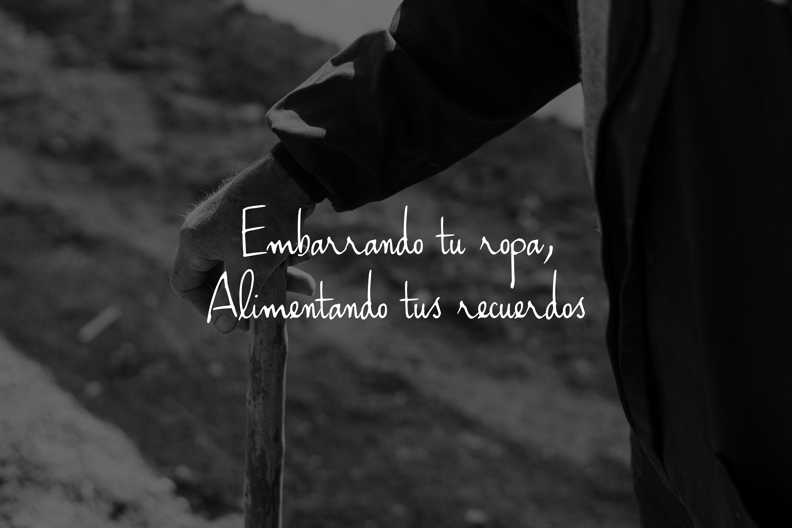
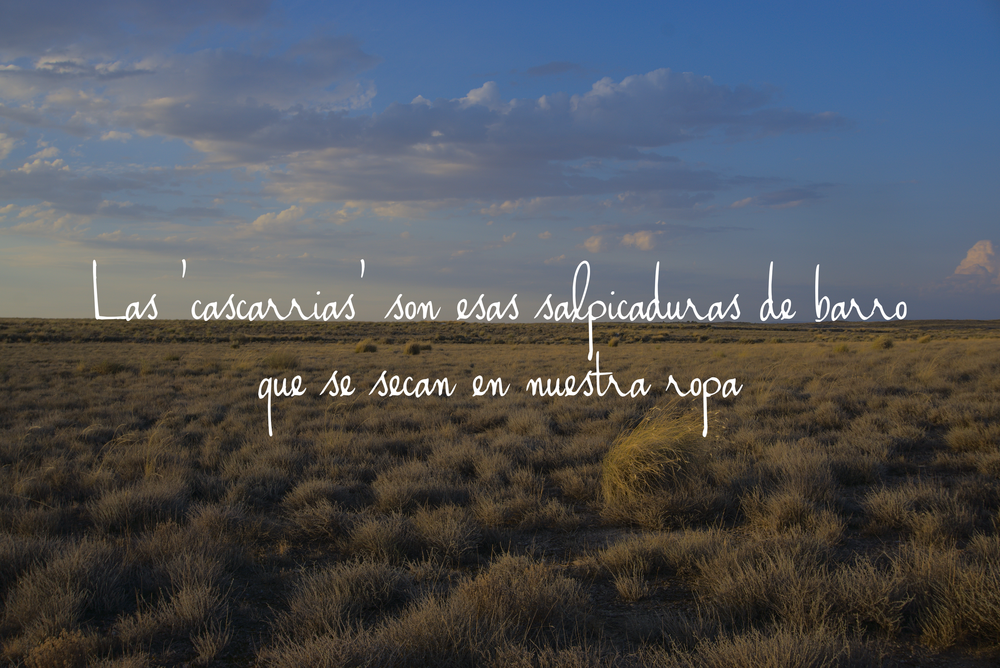

Proyecto liderado por jóvenes que pretende preservar y compartir el valioso legado natural y cultural que las antiguas generaciones de Ablitas y otros pueblos de la Ribera de Navarra nos dejaron en forma de paisaje, biodiversidad, tradiciones, saberes o lenguaje.

No sólo pretendemos conservar la naturaleza, sino también (re)establecer nuestra relación como seres humanos con ella, así como las relaciones que establecemos entre nosotros a través de ella.